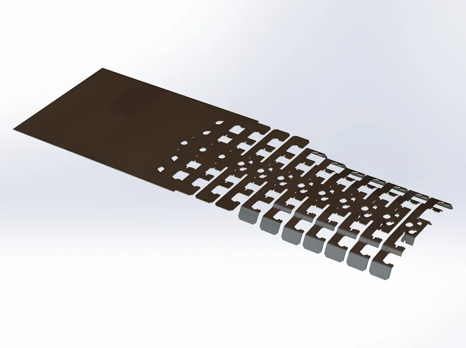
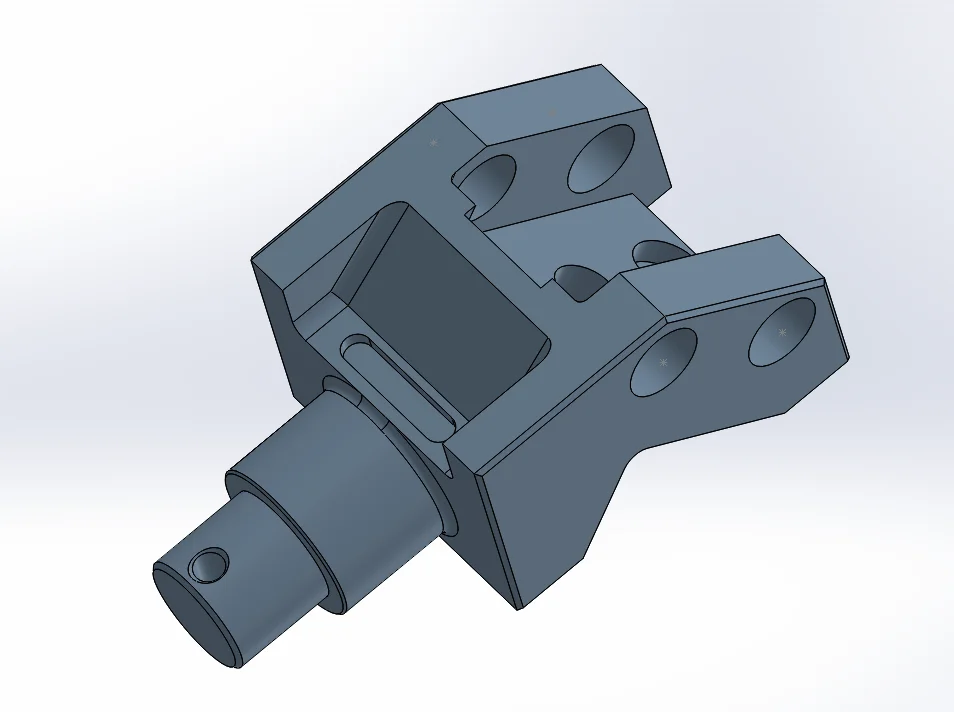
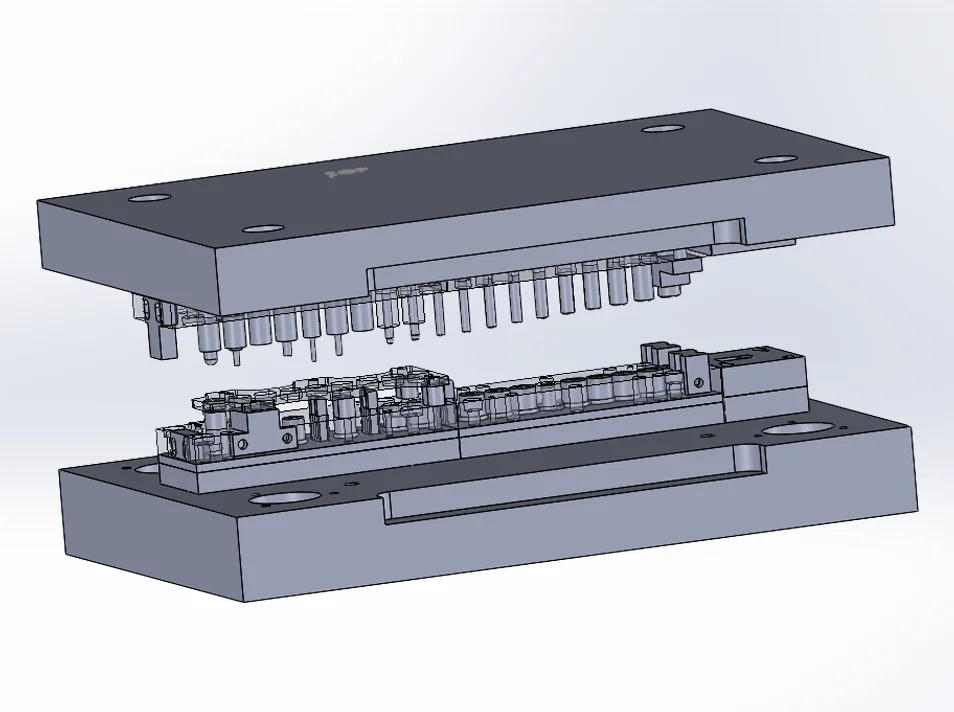
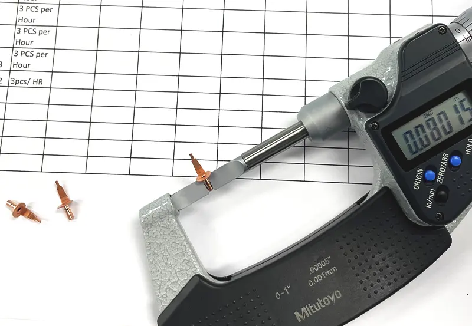

Progressive Metal Stamping
Utilizing power presses ranging from 5 to 60 tons, our progressive stamping capabilities perform deep draw, piercing, punching, forming, tapping, and trimming for high-volume precision metal components.
Jo-Vek Tool & Die Mfg Co.
Partnering with manufacturers since 1952 to design, build, and deliver high-precision progressive tooling, deep-drawn parts, and CNC machined components.

Since 1952, Jo-Vek Tool & Die Manufacturing Co. has delivered high-volume and low-volume custom metal parts engineered to exact specifications. Supported by our experienced in-house design engineers and extensive tool-building department, we guide your project from initial die design through high-speed progressive metal stamping and precision multi-axis CNC machining.



Find the process you need, then send it into the quote builder.
Utilizing power presses ranging from 5 to 60 tons, our progressive stamping capabilities perform deep draw, piercing, punching, forming, tapping, and trimming for high-volume precision metal components.
Leveraging multi-axis CNC machining for tighter tolerances, high-quality finishes, and rapid turnarounds on custom tooling and complex parts.
In-house die makers and design engineers create progressive custom metal tooling optimized for cost efficiency, long operational life, and exact part geometry.
Specialized deep-drawn stamping creates complex parts with uniform material thickness, including high-precision miniature eyelets for detailed compact applications.
Serving global clients since 1952 with extensive material and alloy knowledge for complex stampings and precise die fabrication.
All progressive tools and dies are fully supported and built by our in-house design engineers and tool-building department.
Equipped with power presses from 5 to 60 tons to accommodate both low and high-volume production with tight tolerances.
Select your required manufacturing process, target material alloy, and estimated production quantity to prepare a custom quote request and download technical spec sheets.